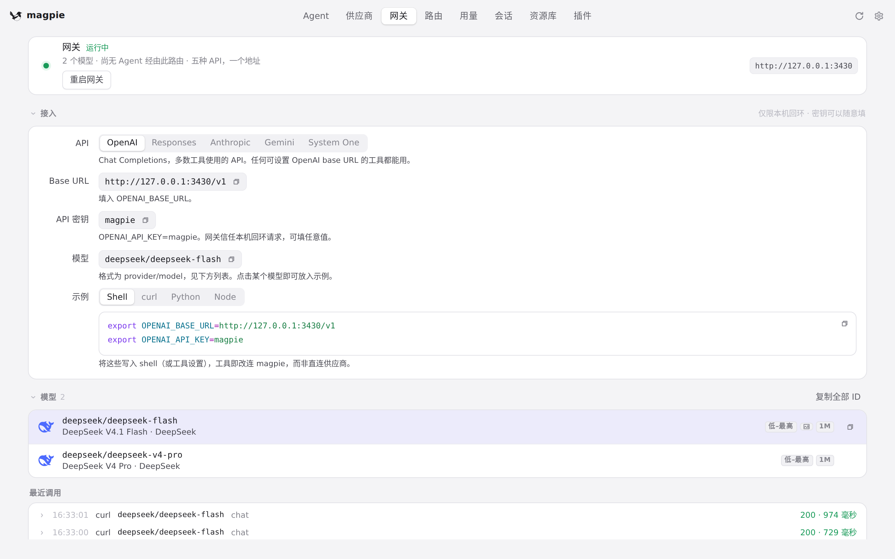
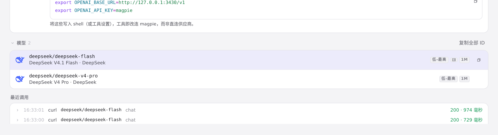
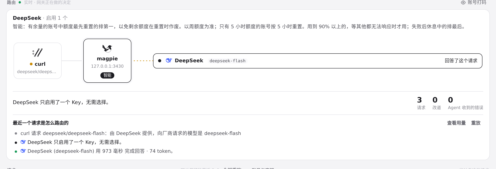
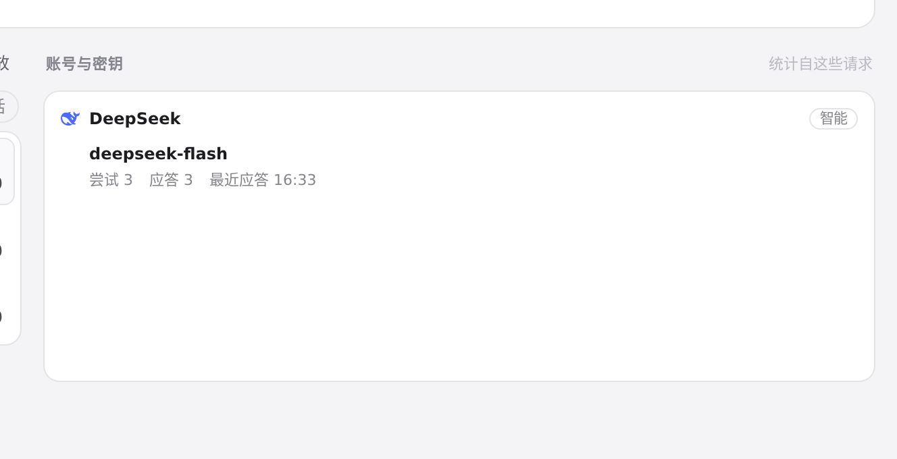

#932 界面预览
commit 4008f17 · 回到 PR · 网关密钥新增「账号」白名单（#905）：密钥的「模型」菜单在模型之后列出供应商的登录账号与密钥（账号显示当前登录者、备注里是套餐，密钥显示指纹），勾选后按 accounts-key 保存，徽标也会显示账号或「N 个账号」；路由页把被密钥排除的账号说成「不是该网关密钥可用的账号」。另有 en/zh/ja/de 新增文案。
红线是鼠标走过的轨迹，红色圆环是一次点击；底部文字是这一步在做什么。空格暂停，← → 逐段查看。

网关页：密钥的模型菜单所在的位置 · 网关页：接入、模型列表与最近调用

网关页：密钥的模型菜单所在的位置 · 网关页的模型列表：网关密钥的「模型」菜单里选的就是这些模型

路由页：账号被密钥排除时会说什么 · 路由页：最近一个请求是怎么路由的，这段说明里会写账号被密钥排除的原因

路由页：账号被密钥排除时会说什么 · 「账号与密钥」一栏：统计自这些请求的账号